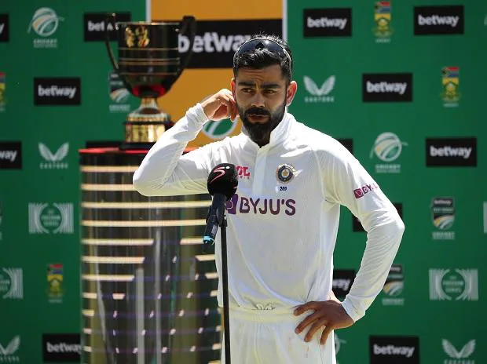

Blog By : - Amit Raj
Why Virat Left Captaincy??

Virat Kohli quits Test captaincy, a day after series defeat against Proteas
The inevitable came a bit early as Virat Kohli on Saturday quit as India's Test captain, saying he did his job with "absolute honesty" and time was right to quit the leadership role. Kohli's announcement came a day after India suffered an embarrassing Test series defeat against South Africa. Kohli was dealing with one controversy after another as he was recently removed as ODI captain by the BCCI after he decided to step down at Twenty20 captain. His decision to quit as Test skipper has come at a time when his relation with the BCCI is so strained that he preferred to announce his decision on social media. Kohli was appointed Test captain back in 2014 when M S Dhoni stepped down in the middle of the series against Australia. "Every thing has to come to a halt at some stage and for me as Test captain of India, it's now," Kohli wrote in a statement which he posted on Twitter, taking everyone by surprise. "There have been many ups and also some downs along the journey but there has never been lack of effort or lack of belief." Interestingly, when Kohli had quit T20 captaincy, he had also posted his message on social media. "It's been seven years of hard work, toil and relentless perseverance everyday to take the team in the right direction. I have done the job with absolute honesty and left nothing out there," he wrote in his statement. Kohli led India to the top of world rankings and during his tenure, the team recorded a memorable series win in Australia.